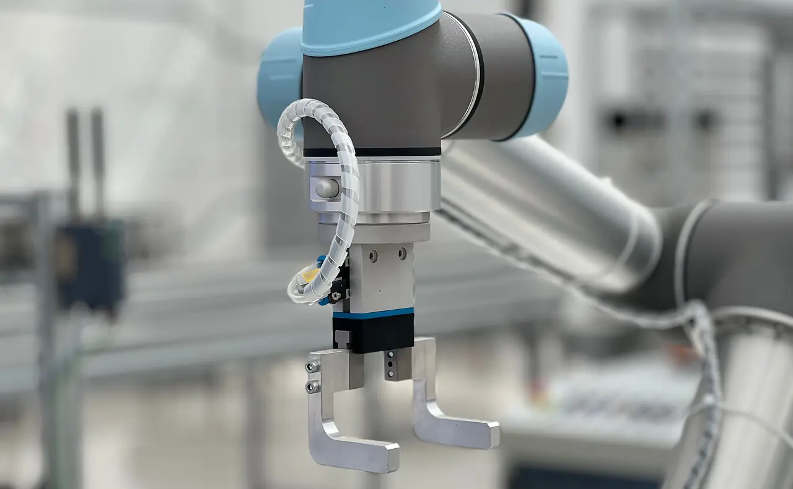

Tự động hóa AI
RPA là gì? Khác gì tự động hóa bằng AI và doanh nghiệp nhỏ nên chọn cách nào
RPA, tự động hóa qua API và AI thường bị gọi chung là tự động hóa, nhưng chúng giải ba bài toán khác nhau. Chọn sai cách là tốn tiền mà hệ thống vẫn chập chờn.
RPA (Robotic Process Automation, tự động hóa quy trình bằng robot phần mềm) là cách dùng một chương trình bắt chước thao tác của người trên máy tính: mở phần mềm, bấm nút, sao chép, dán, gõ dữ liệu, theo các bước cố định. Tự động hóa bằng AI thì khác: AI đọc hiểu nội dung như email, hóa đơn, tin nhắn và đưa ra phán đoán. RPA làm tay chân theo quy tắc, AI làm phần đọc và nghĩ; hai cách thường được kết hợp với nhau.
Với doanh nghiệp nhỏ, còn một lựa chọn thứ ba hay bị bỏ quên: nối thẳng các phần mềm với nhau qua API bằng công cụ như n8n hoặc Make. Bài này giải thích cả ba, khi nào dùng cái nào, ví dụ cụ thể ở Việt Nam và những sai lầm khiến dự án tự động hóa chạy chập chờn.
RPA là gì, hiểu đơn giản
Hãy hình dung một nhân viên mỗi sáng mở email, tải bảng kê đơn hàng, đăng nhập phần mềm kế toán cài trên máy, gõ từng dòng vào, rồi xuất báo cáo gửi sếp. RPA ghi lại chuỗi thao tác đó thành kịch bản và cho một “robot phần mềm” làm lại y hệt, nhanh hơn và không mệt.
Chữ “robot” dễ gây hiểu nhầm. RPA không phải cánh tay máy trong nhà xưởng; nó là phần mềm chạy trên máy tính hoặc máy chủ, điều khiển chuột, bàn phím và cửa sổ ứng dụng như một người dùng vô hình.
Hai kiểu RPA
- RPA có người đi kèm (attended): chạy trên máy của nhân viên, nhân viên bấm nút để robot làm một đoạn việc, ví dụ điền sẵn biểu mẫu từ dữ liệu khách đang mở.
- RPA tự chạy (unattended): chạy trên một máy riêng theo lịch hoặc theo sự kiện, không cần ai ngồi cạnh, ví dụ mỗi đêm tải sao kê và đối chiếu.
Các nền tảng RPA phổ biến trên thế giới có UiPath, Automation Anywhere, Microsoft Power Automate (phần chạy trên máy tính Windows). Mức phí và giấy phép của từng hãng khác nhau và thay đổi theo thời gian, nên hãy xem trang giá chính thức khi cần so sánh.

Tự động hóa bằng AI khác RPA ở đâu
RPA giỏi làm đúng từng bước đã định, nhưng không hiểu nội dung. Nếu hóa đơn của nhà cung cấp A đặt số tiền ở góc phải, nhà cung cấp B đặt ở cuối trang, RPA thuần sẽ cần một kịch bản riêng cho mỗi mẫu. AI thì đọc được cả hai vì hiểu “đây là tổng tiền thanh toán”.
Tương tự, RPA không tự biết một email là khiếu nại hay hỏi giá, một tin nhắn Zalo là khách nóng hay khách hỏi cho biết. Đó là việc của AI: phân loại, trích thông tin, tóm tắt, viết nháp, chọn hướng xử lý. Khi AI được cho phép tự gọi công cụ để hoàn thành nhiệm vụ nhiều bước, ta có AI agent.
Một câu để nhớ: RPA tự động hóa thao tác, tự động hóa qua API tự động hóa đường đi của dữ liệu, còn AI tự động hóa phần đọc hiểu và phán đoán.
So sánh RPA, tự động hóa qua API và AI
| Tiêu chí | RPA | Tự động hóa qua API (n8n, Make) | AI |
|---|---|---|---|
| Làm việc thế nào | Bắt chước chuột, bàn phím trên giao diện | Phần mềm trao đổi dữ liệu trực tiếp với nhau | Đọc hiểu văn bản, hình ảnh, đưa ra phán đoán |
| Hợp với dữ liệu | Có cấu trúc, mẫu cố định | Có cấu trúc | Không cấu trúc: email, tin nhắn, chứng từ nhiều mẫu |
| Cần phần mềm có API | Không | Có | Không, nhưng cần nơi để đọc và ghi kết quả |
| Độ bền | Dễ hỏng khi giao diện đổi, cửa sổ bật lên bất ngờ | Bền, ít phụ thuộc giao diện | Kết quả có xác suất sai, cần kiểm tra |
| Tốc độ | Ngang hoặc nhanh hơn người một chút | Rất nhanh | Vài giây mỗi lần xử lý |
| Dùng tốt nhất khi | Phần mềm cũ, cài trên máy, không kết nối được | Các phần mềm hiện đại, dịch vụ đám mây | Bước cần đọc, phân loại, viết |
Thứ tự ưu tiên hợp lý cho doanh nghiệp nhỏ: nếu phần mềm có API hoặc xuất được dữ liệu ra Google Sheets, hãy nối qua API trước vì bền và rẻ. Chỉ dùng RPA cho đoạn bắt buộc phải thao tác trên giao diện. Thêm AI vào đúng những bước cần đọc hiểu. Công cụ nối qua API phổ biến là n8n, xem bài n8n là gì, có miễn phí không.
Ví dụ RPA và AI trong doanh nghiệp Việt
Các tình huống dưới đây là ví dụ minh họa, không phải dự án khách hàng thật.
Công ty thương mại: hóa đơn đầu vào vào phần mềm kế toán cài máy
Hóa đơn điện tử từ nhiều nhà cung cấp về hộp thư. AI đọc từng hóa đơn, trích nhà cung cấp, số hóa đơn, mặt hàng, số tiền, thuế suất, đánh dấu hóa đơn đọc chưa chắc. Nếu phần mềm kế toán có chức năng nhập từ tệp Excel, luồng tự động chỉ cần xuất đúng mẫu. Nếu phần mềm cũ chỉ cho gõ tay, RPA làm phần nhập liệu vào màn hình. Kế toán chỉ duyệt danh sách đã đánh dấu. Bài tự động hóa kế toán bằng AI đi sâu hơn vào phần này.
Đơn vị vận chuyển: cập nhật trạng thái đơn hàng
Nhân viên mỗi ngày tra mã vận đơn trên trang của đối tác vận chuyển rồi cập nhật vào bảng theo dõi. Nếu đối tác có API tra cứu, nên nối API: nhanh, chính xác, không lo đổi giao diện. Chỉ khi đối tác không cung cấp kết nối và điều khoản sử dụng cho phép, mới cân nhắc RPA thao tác trên trang. AI ở đây gần như không cần, vì dữ liệu đã có cấu trúc.
Cửa hàng bán nhiều kênh: chăm sóc sau mua
Khách nhắn hỏi đổi size, phàn nàn giao chậm, hỏi bảo hành. Đây là bài toán của AI: hiểu ý khách, phân loại, soạn câu trả lời, chuyển người khi cần. RPA không giúp được gì ở bước hiểu tin nhắn. Sau khi AI phân loại, luồng tự động qua API ghi phiếu vào bảng theo dõi và báo cho nhân viên phụ trách.
Khi nào nên dùng RPA, khi nào không
RPA hợp khi
- Phần mềm đang dùng là bản cài trên máy, không có API, không xuất nhập được tệp, mà doanh nghiệp chưa thể thay.
- Quy trình ổn định, ít ngoại lệ, giao diện phần mềm hiếm khi cập nhật.
- Khối lượng đủ lớn: việc lặp lại hằng ngày, mất nhiều giờ công mỗi tháng.
- Cần giải pháp tạm thời trong lúc chờ chuyển sang phần mềm mới có kết nối.
RPA không hợp khi
- Phần mềm đã có API hoặc kết nối sẵn với Google Sheets, CRM: nối trực tiếp rẻ và bền hơn.
- Dữ liệu đầu vào là văn bản tự do, chứng từ nhiều mẫu: cần AI đọc trước.
- Trang web có mã xác thực chống robot, hoặc điều khoản sử dụng cấm truy cập tự động.
- Không có máy tính để robot chạy ổn định, hoặc không ai theo dõi khi robot dừng.
Ba câu hỏi để tự chọn
- Phần mềm đích có API, có chức năng nhập tệp, hoặc kết nối sẵn với công cụ khác không? Có thì dùng tự động hóa qua API.
- Dữ liệu đầu vào có cố định về mẫu không? Không thì cần AI ở bước đọc.
- Còn đoạn nào bắt buộc phải bấm trên giao diện? Đoạn đó mới dùng RPA.
Chuẩn bị gì trước khi tự động hóa một quy trình
- Ghi lại từng bước nhân viên đang làm, kèm ảnh chụp màn hình, số lần làm mỗi ngày và thời gian mỗi lần.
- Liệt kê các phần mềm tham gia và kiểm tra từng phần mềm có API, có chức năng nhập xuất tệp hay không.
- Gom 10 đến 20 mẫu dữ liệu đầu vào thật, gồm cả mẫu xấu, thiếu thông tin, để chạy thử.
- Thống nhất trường hợp nào robot hoặc AI phải dừng lại và chuyển cho người xử lý.
- Chọn người nội bộ nhận cảnh báo khi luồng lỗi và kiểm tra kết quả trong những tuần đầu.
Sai lầm thường gặp
- Dùng RPA cho mọi thứ. Robot bấm nút trên phần mềm có API sẵn là làm khó chính mình: chậm hơn, dễ hỏng hơn khi phần mềm cập nhật.
- Tự động hóa một quy trình đang lộn xộn. RPA làm đúng từng bước bạn ghi, kể cả bước thừa. Hãy rút gọn quy trình trước rồi mới tự động hóa.
- Gọi mọi thứ là AI. Nhiều giải pháp quảng cáo “AI” thực chất là RPA theo quy tắc. Không sai, nhưng cần biết để kỳ vọng đúng: nó không tự xử lý được trường hợp lạ.
- Để AI ghi thẳng vào sổ sách. AI đọc chứng từ có xác suất sai. Kết quả AI nên có ngưỡng tin cậy và bước người duyệt trước khi robot nhập vào hệ thống.
- Không có người phụ trách. Robot dừng vì một cửa sổ cập nhật bật lên, không ai biết, việc dồn lại cả tuần.
- Dùng tài khoản cá nhân của nhân viên cho robot. Khi nhân viên nghỉ, đổi mật khẩu, robot dừng. Hãy tạo tài khoản riêng cho robot với quyền vừa đủ.
Chi phí tự động hóa tại Dream Labs
Dream Labs ưu tiên kết nối qua API và Google Sheets bằng nền tảng như n8n, thêm AI ở những bước cần đọc hiểu như phân loại khách, trích thông tin chứng từ, viết báo cáo. Với phần mềm không có kết nối, chúng tôi khảo sát trước và nói rõ phương án nào khả thi, phương án nào dễ hỏng. Phí triển khai chia theo ba gói, gói Tăng trưởng 15.000.000đ gồm 3 quy trình tự động và kết nối phần mềm bán hàng, kế toán:
| Gói | Giá | Thời gian | Bao gồm |
|---|---|---|---|
| Khởi động | 5.000.000đ | 5–7 ngàyHỗ trợ 1 tháng | Không bỏ lỡ khách nhắn ngoài giờ, nhân viên thôi trả lời lặp lại, mọi khách mới nằm gọn trong một bảng.
|
| Tăng trưởngPhổ biến nhất | 15.000.000đ | 14 ngàyHỗ trợ 3 tháng | Đơn hàng, chăm sóc khách và báo cáo tự chạy: dữ liệu nhập một lần, đội ngũ dành giờ cho tư vấn và chốt đơn.
|
| Doanh nghiệp | Liên hệ | 30+ ngàyHỗ trợ 12 tháng | Một hệ thống vận hành riêng: xem số liệu theo thời gian thực, mở rộng quy mô mà không phải tăng người tương ứng.
|
Phí mô hình AI và nền tảng hằng tháng tính riêng theo lượng dùng, tài khoản đứng tên doanh nghiệp. Xem trang dịch vụ tự động hóa quy trình doanh nghiệp, bảng giá hoặc bài tổng quan tự động hóa quy trình doanh nghiệp bằng AI. Gửi danh sách phần mềm đang dùng qua Zalo 0934 246 420 để được tư vấn cách nối.
Câu hỏi thường gặp
RPA có phải là AI không?
Không hẳn; RPA truyền thống chạy theo quy tắc cố định và không tự hiểu nội dung, còn AI đọc hiểu và phán đoán, nhiều nền tảng RPA hiện nay gắn thêm AI để xử lý phần chứng từ và văn bản.
Doanh nghiệp nhỏ có cần RPA không?
Phần lớn doanh nghiệp nhỏ dùng phần mềm đám mây có kết nối sẵn nên nối qua API là đủ; RPA chỉ cần khi còn phần mềm cũ cài trên máy không có cách kết nối nào khác.
RPA có thay thế nhân viên không?
RPA thay phần thao tác lặp lại như gõ, sao chép, đối chiếu; nhân viên vẫn cần cho việc xử lý ngoại lệ, kiểm tra kết quả và làm việc với khách hàng, đối tác.
Vì sao robot RPA hay bị lỗi?
RPA dựa vào vị trí nút bấm và giao diện, nên dễ dừng khi phần mềm cập nhật, có cửa sổ bật lên bất ngờ, mạng chậm hoặc dữ liệu đầu vào khác mẫu.
n8n có phải là công cụ RPA không?
Không, n8n chủ yếu tự động hóa bằng cách nối các phần mềm qua API và webhook, không điều khiển chuột, bàn phím trên giao diện như công cụ RPA.
Nên kết hợp RPA và AI thế nào?
Để AI đọc và phân loại dữ liệu không cấu trúc như email, hóa đơn, người duyệt các trường hợp chưa chắc, rồi để luồng tự động qua API hoặc RPA nhập kết quả vào hệ thống.
Nguồn ảnh: ảnh bìa: Kindel Media / Pexels · ảnh 1: cottonbro studio / Pexels · ảnh 2: KJ Brix / Pexels. Ảnh dùng theo giấy phép miễn phí của Pexels, chỉ mang tính minh họa.
Bắt đầu cùng Dream Labs
Không biết quy trình của mình hợp RPA, API hay AI?
Nhắn Zalo cho Dream Labs quy trình đang làm tay và phần mềm đang dùng. Chúng tôi xem phần mềm có kết nối được không và đề xuất cách tự động hóa bền nhất.